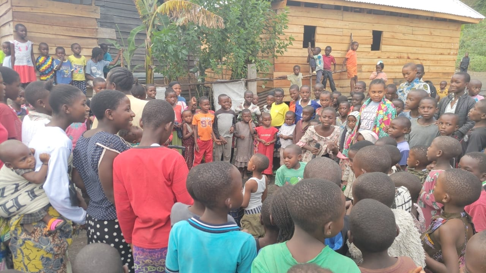
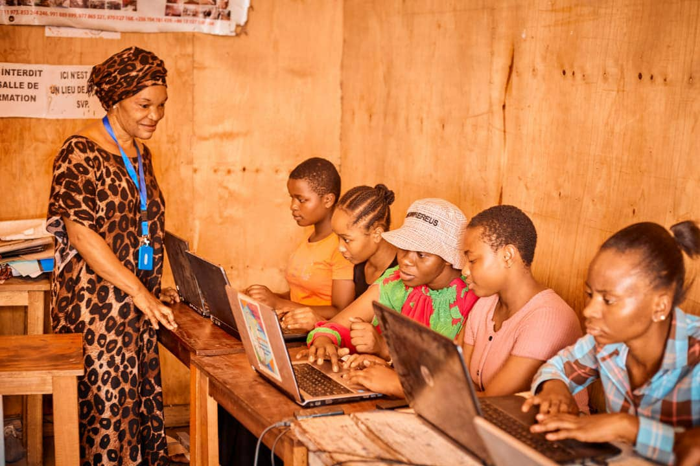
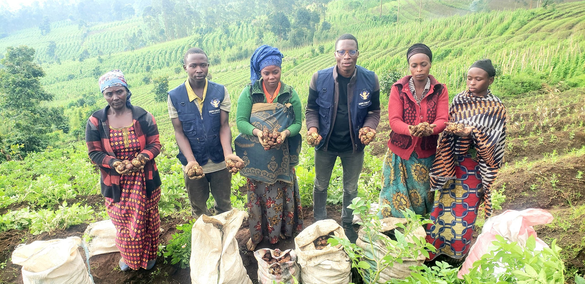

Nos Projets
Découvrez nos actions concrètes sur le terrain

Renforcement des mécanismes communautaires de protection de l'enfant
Formation de 70 acteurs humanitaires des ONG partenaires FHOVE et AVDA pour la prévention des violences et la protection des enfants à Rutshuru.

Autonomisation des filles par l'éducation
35 jeunes filles mineures formées et équipées en machines ordinateurs à Nyiragongo. Restauration de leur dignité et statut social.

Résilience climatique pour une agriculture durable
Renforcement de la résilience climatique pour une agriculture durable dans le village de Bweremana, Groupement Mumpfunyi Shanga.
Soutenez nos projets
Votre contribution nous permet de protéger les enfants, de les éduquer et de renforcer la résilience des communautés en RDC.